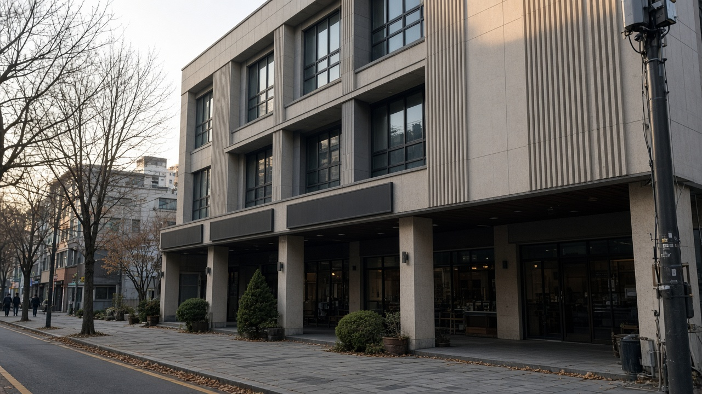

오피스텔 상가 기준시가안 12월 2일까지 열람, 상속 증여나 매도를 앞뒀다면 내 호실 가격부터 보세요

오피스텔이나 상가 한 칸을 가지고 계신 분들은 연말이 되면 세금 이야기가 자꾸 귀에 들어오죠.
특히 자녀에게 물려주거나 증여를 생각 중이라면, 국세청이 매기는 기준시가가 얼마로 정해지는지가 꽤 중요한 숫자가 될 수 있어요.
국세청이 11월 12일 2027년 오피스텔과 상업용 건물 기준시가안을 공개하고, 11월 13일부터 12월 2일까지 열람과 의견 제출을 받는다고 밝혔어요.
기준시가가 어디에 쓰이는지, 올해 가격안은 어떻게 움직였는지, 내 호실은 어떻게 확인하고 의견은 어떻게 내는지 차례로 정리해 볼게요.
기준시가안 열람, 누가 챙겨 봐야 할까요
이번에 공개된 건 2027년 1월 1일부터 적용될 예정인 오피스텔과 상업용 건물의 호실별 가격안이에요.
기준시가는 땅과 건물 값을 한꺼번에 묶어서 호실마다 제곱미터당 가격으로 매기는 방식이에요.
대상은 전국의 오피스텔, 그리고 수도권과 지방 광역시, 세종, 전남광주통합특별시의 동구 서구 남구 북구 광산구에 있는 상업용 건물 가운데 점포 바닥면적이 3천 제곱미터 이상이거나 구분 소유된 점포가 100호 이상인 건물이에요.
2026년 9월 1일 기준으로 조사했고, 8월 말까지 준공이나 사용승인을 받은 건물이 들어가요.
고시 물량은 지난해보다 2.7퍼센트 늘어난 256만 호이고, 그중 서울 경기 인천이 195만 호로 약 76퍼센트를 차지해요.
그러니 수도권에 오피스텔이나 큰 상가 건물의 점포를 가진 분이라면 대부분 해당된다고 보시면 돼요.
재산세나 건보료가 아니라 상속 증여와 양도세에 쓰이는 숫자예요
여기서 많이들 헷갈리시는데, 이 기준시가는 취득세나 재산세 같은 지방세, 종합부동산세, 건강보험료 같은 사회보험료를 매길 때는 쓰이지 않아요.
그런 세금에는 행정안전부의 시가표준액 같은 별도 기준이 적용돼요.
국세청 기준시가가 실제로 힘을 쓰는 곳은 크게 두 군데예요.
하나는 상속세와 증여세예요.
원칙은 시가로 계산하는데, 상속은 상속개시일 앞뒤 6개월, 증여는 증여일 전 6개월부터 후 3개월 사이에 매매나 감정, 경매 같은 가격이 확인되지 않으면 고시된 기준시가로 재산 가액을 정할 수 있어요.
다른 하나는 양도소득세예요.
예전에 산 가격을 증명할 계약서가 없어 취득 당시 실제 거래가액을 확인할 수 없을 때, 팔 때의 실제 가격에 취득 당시 기준시가를 양도 당시 기준시가로 나눈 비율을 곱해 취득가액을 거꾸로 계산하는데, 이때 기준시가가 들어가요.
올해 가격안, 전국은 내리고 서울은 올랐어요
가격안을 보면 전국 오피스텔은 지난해보다 0.47퍼센트, 상업용 건물은 0.81퍼센트 내려가 2년 연속 하락이에요.
그런데 서울만 놓고 보면 오피스텔은 2.07퍼센트, 상업용 건물은 0.28퍼센트 올랐어요.
지역별 차이는 꽤 커요.
오피스텔 기준으로 대구는 5.28퍼센트, 제주는 5.19퍼센트, 강원은 4.44퍼센트, 전남광주는 3.93퍼센트 내렸고, 경기는 1.39퍼센트, 인천은 3.03퍼센트 내렸어요.
상업용 건물은 세종이 3.29퍼센트, 대구가 2.46퍼센트 내려 낙폭이 큰 편이었어요.
다만 이건 지역 전체를 합친 평균 변동률이라서, 같은 지역이라도 내 호실은 다르게 움직였을 수 있어요.
결국 내 호실 숫자를 직접 열어 보는 게 가장 확실해요.
내 호실 가격 확인하고 의견 내는 방법
열람은 국세청 누리집이나 홈택스 첫 화면에 걸린 2027년 오피스텔 및 상업용 건물 기준시가 고시 전 가격 열람 및 의견 제출 배너를 누르면 돼요.
홈택스에서는 전체메뉴의 상담 불복 제보, 기타, 기준시가 조회, 오피스텔 및 상업용 건물 화면 아래쪽에서도 같은 배너를 찾을 수 있어요.
건물 소재지와 동, 호수를 넣으면 그 호실의 가격안이 나와요.
가격이 주변 실제 거래나 임대 상황과 많이 다르다고 생각되면 같은 화면에서 온라인으로 의견을 낼 수 있어요.
온라인이 어렵다면 같은 화면에서 의견 제출서 서식을 내려받아 작성한 뒤 관할 세무서에 직접 가져가거나 우편으로 보내도 돼요.
열람과 의견 제출 관련 상담은 전용 안내센터 1644 2828에서 12월 2일까지 받아요.
12월 2일 이후 절차와 미리 챙겨 둘 것
제출된 의견은 한국부동산원이 다시 조사해서 받아들일지 검토하고, 국세청 평가심의위원회 심의를 거쳐 12월 31일에 최종 기준시가가 확정 고시될 예정이에요.
의견을 낸 사람에게는 12월 31일까지 받아들여졌는지 개별로 알려 준다고 해요.
의견을 낼 때는 가격이 높다 낮다는 느낌보다 같은 건물 비슷한 호실의 최근 거래 가격이나 임대료처럼 근거가 될 자료를 같이 정리해 두는 편이 좋아요.
그리고 가격이 낮을수록 늘 유리한 것만은 아니에요.
양도세를 계산할 때 취득 당시와 양도 당시 기준시가의 비율이 쓰이는 만큼, 상황에 따라 유불리가 달라질 수 있어요.
증여나 매도처럼 큰 결정을 앞두고 있다면 내 호실 가격안을 확인한 뒤 세무서 상담이나 세무 전문가와 함께 따져 보시길 권해요.
참고 자료 국세청 2026년 11월 12일 보도참고자료 내년도 오피스텔 및 상업용 건물 기준시가 사전열람 12월 2일까지 의견 제출하세요, 대한민국 정책브리핑 같은 날 게재본, 조세플러스 2026년 11월 12일 내년 오피스텔 및 상업용 건물 기준시가 12월 2일까지 의견 제출해야
태그 오피스텔기준시가 상업용건물기준시가 기준시가열람 기준시가의견제출 상가기준시가 증여세 상속세 양도소득세 홈택스 국세청